Three thousand years of history, simulated. One life with a sword and a bow. A brass instrument that lets you go back and try again. This guide covers everything in the game, with screenshots and real examples from world 1.
The idea
The world of Wayfarer is not scripted. Underneath the game runs the Chronoscope simulation: peoples farm, multiply, fight over borders, catch plague, rise into empires and shatter into successor states, year after year, all by a handful of rules. The same world number always produces the same history.
You are one person in that history. You can walk it, fight in it, help the people you meet, and, once you carry the Chronoscope, travel to any year and change it. Every quest you finish is recorded as a deed in the timeline, and the future is re-simulated from that moment. Your goal is to save your people from a fall that history says is coming.
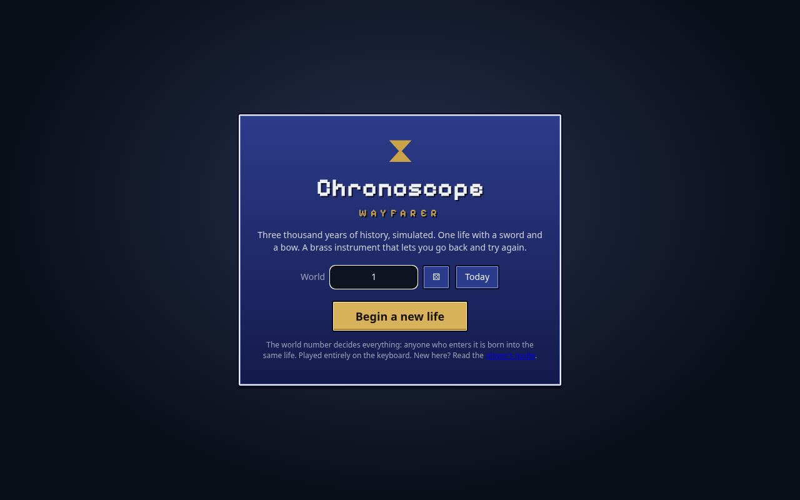
The title screen. The world number decides everything: anyone who enters 1 is born into the same life.
Starting out
Enter a world number (or press Today for today's world, or ⚄ for a random one) and press Enter. The game simulates history up to your birth, then introduces you: who you are, which people you belong to, their customs, their neighbours, and what the elders remember, all generated from the real simulation.
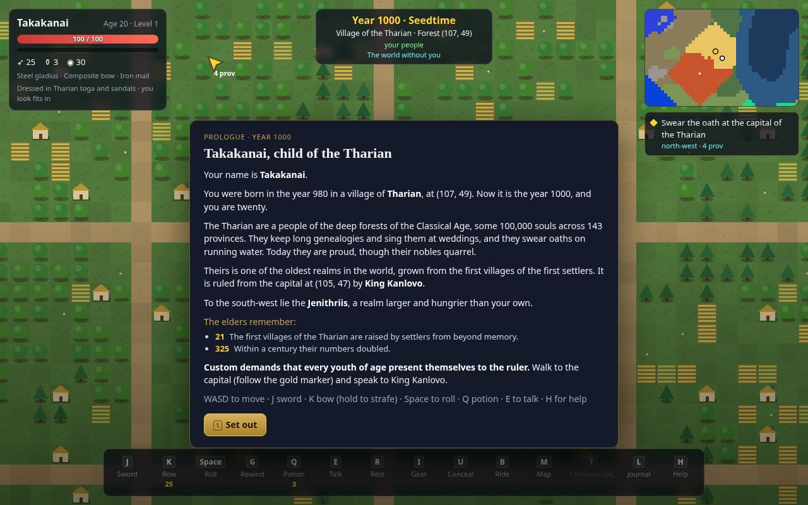
World 1: you are Takakanai, twenty years old, of the Tharian, a Classical Age forest people of 100,000 ruled by King Kanlovo. To the south-west lie the larger, hungrier Jenithriis.
Your first task is custom: walk to the capital (follow the gold marker) and swear the oath to your ruler. The ruler sends you to clear raiders near the capital; when you come back, a stranger is waiting for you.
If you have played before, the title screen offers Continue (your latest save) and Load….
Controls
Wayfarer is played entirely on the keyboard. You face the way you walk; attacks lock on to the nearest foe in front of you (a gold ring marks the target).
Key
Action
WASD / arrows
Move (on water you take a boat)
J
Melee attack (hold to keep swinging)
K
Ranged attack (hold to keep firing and strafe around your target)
Space / Shift
Dodge roll (you cannot be hit mid-roll)
G (hold)
Rewind 2 to 10 seconds and fight beside your past self
Q
Drink a potion
E
Talk
R
Rest a season in a village: heal, restock ammunition, +1 potion
I
Inventory
U
Conceal everything out of its time (and take it out again)
B
Mount or dismount your horse
M
Travel map
T
The Chronoscope (once you have it)
V
Watch your world and the world without you diverge
L
Journal
P / Esc
Pause: save, load, return to the title
H
Help
In dialogs
1–9 choose, Enter or E accept, Esc decline
Exploring the world
Every province of the simulated map is a walkable area: villages whose size follows their real population, fields, forests, rivers you can ford, roads between provinces, and castles in capitals. When history changes, the land changes with it.
Village life
Villagers have trades and do the work that makes the history you see. The game reads each village's future from the timeline, a year and three years ahead, and they act on it:
Growing villages build. A house that will exist next year is being raised now, on the very spot it will stand: timber hauled from the woods, a frame, then the roof. When the year turns, it is there.
Farmers work the soil while it feeds them. They hoe in spring and reap and carry sheaves at harvest. When the soil is spent they warn that the harvest will fail; in a famine the fields lie dead and people glean and forage. Shrinking villages see families pack up and leave.
War and plague change the day. At war, villagers drill with spears on the green. A village that will be conquered drives stakes on the side the enemy will come from. With plague, the sick sit on their doorsteps and neighbours bring water.
Solidarity shows. Proud realms hold festivals; bitter ones quarrel. Stand near two villagers talking and you will overhear what is really happening to them. They wave if you look like one of them, and eye you warily if you do not.
Change history and their work changes with it. A short rewind (G) turns back their work too.
Roads, borders and seasons
Roads follow history. The footpaths between provinces never move, so the land always stays walkable, but what they are made of does: a trodden path in the wilds, a dirt road through villages, and cobbled highways from each capital to its large towns once a realm reaches the Classical age (paved from the Renaissance). When a capital moves, the highways move with it.
Borders are banners. Where a road crosses into a realm, its banner stands beside the road.
Seasons change the land. Leaves turn and fall in autumn; in winter snow covers the ground and roofs, trees go bare and windows glow. Spring brings butterflies, and chimneys smoke all year.
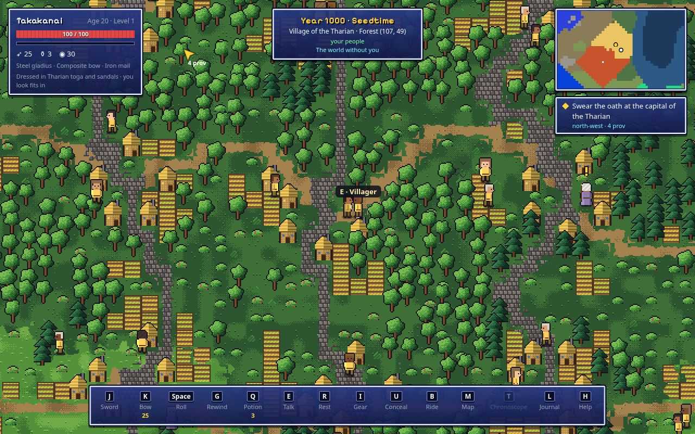
A Tharian forest village. Elders with a gold ! have work for you; a cyan ? means someone is waiting for you to turn a quest in.
The screen
Top left: your name, age, level, health and experience; ammunition, potions and silver; what you wield and wear; suspicion and Chronoscope strain when they matter.
Top centre: the year and season; where you are; how that realm stands with your people (your people, at war with your people, uneasy neighbours…); which timeline you are in.
Top right: a minimap of the provinces around you, your people's fate in this timeline, and your objectives with directions.
Bottom: the hotbar of keys.
Fighting
Enemies telegraph their attacks: a red ring flashes around them just before they strike, and bosses glare a red line before they charge. Roll out of the way. Out of combat you slowly recover, faster in a village.
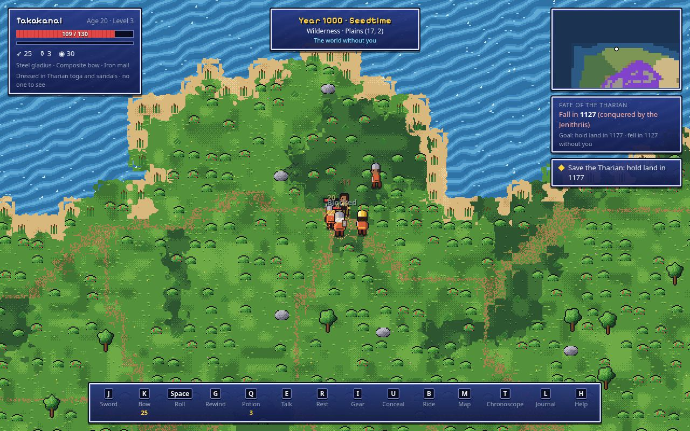
A Jenithriis warband: soldiers, a bowman, a shieldbearer and a captain. Damage numbers float up; health bars show who is hurt.
What you will meet
Foe
Notes
Wolves, jackals, bears, plague rats
The wild, and plagued villages
Bandits, archers, raider chiefs
Camps in hungry or divided lands
Soldiers, bowmen, captains
Realms at war (see Realms at war); stronger in later ages
Shieldbearers
Block blows from the front unless they are swinging: flank them, or hit them as they attack
Named elites
"Rutaeth the Cruel", "Quickblade": tougher, with a trait (swift, brutal, stalwart); they drop the gear of their age
Royal guards and rulers
Boss fights in rival capitals
Great beasts
Named monsters ("the Pale Hunter") that call their pack when wounded
How hard is it?The game was balanced with a bot that plays like novice, average and skilled players. A raider camp costs a level-1 novice about half their health. A rival king with his royal guard kills almost every level-1 player, but a level-5 player wins with about one potion.
Quests change history
Quests come from what is really happening around the person who gives them: plague next door, an empty valley, a hostile border, unrest, a rival's capital. Each offer tells you exactly what history will record if you succeed, the reward, and a danger rating with a recommended level.
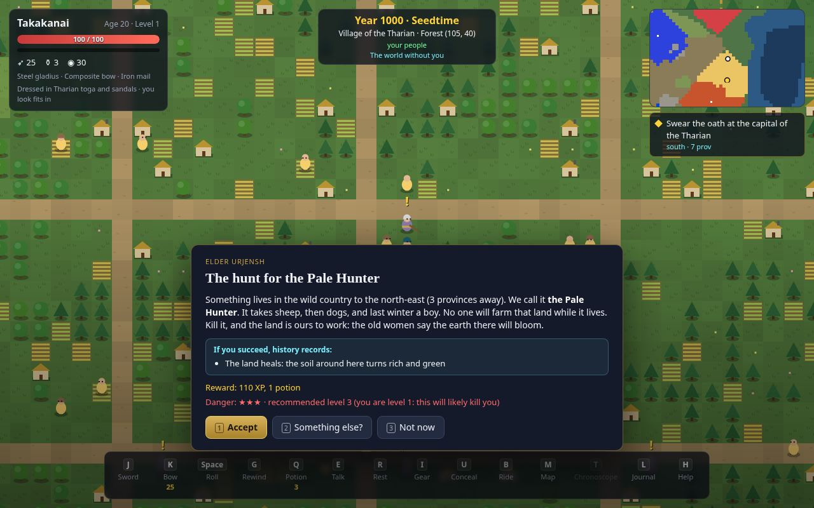
An elder asks you to kill the Pale Hunter, a beast in the wild country three provinces away. If you succeed, "the land heals": a real intervention that makes the soil rich, so people can settle there. At level 1 the danger line is red: this will likely kill you.
Quest
How it plays
What history records
Raider camp
Clear a camp
Irrigation: richer soil
Riders on the frontier
Break an enemy warband
Rallies: solidarity on the border
Siege
Hold a village against three waves
Rallies
Moonwort for the sick
Gather herbs among plague rats
The plague ends
Settlers
Defend a camp in empty land
The land is settled
The exiles' road
Escort exiles far into empty country
A new people is founded
The holy wanderer
Escort a prophet to the capital alive
Solidarity surges across a region
Great beast hunt
Kill a named beast
The land blooms
The rising
Choose a side: help rebels or crush them
A new people, or a rally
Ruins and tablets
Defeat tomb wardens, take the tablets
Lost knowledge: a realm leaps ahead
Stolen codex / Teach
Recover a codex, then teach another people
You learn; they learn
Granaries (spymaster)
Burn granaries in the rival capital
Discord
Salt their fields (spymaster)
Break storehouses in their farmland
Salted earth for generations
Poisoned wells (spymaster)
Foul two wells in their capital
Plague (and it may spread to you)
Death of the ruler (spymaster)
Royal guard and a boss ruler
A realm-wide succession crisis
Renown. Quests for your own people earn renown. The spymaster's darker work opens up as you earn it: salting fields at renown 2, poisoned wells at 3, regicide at 4.
Your story and the goal
After your trial, a stranger in grey gives you the Chronoscope and shows you your people's fall: the year it happens, who does it, and why. Your goal is that your people still hold land 50 years after their foretold fall. The ruler's spymaster and scholar now have work for you in the capital.
World 1The Tharian fall in 1127, conquered by the Jenithriis: "Their solidarity held; they were simply outmatched." To win, they must still hold land in 1177. Killing the Jenithriis King Garvoravi in his own hall in the year 1000 threw his realm into a succession crisis (solidarity 39.7% → 27.0%), and the Tharian now last until 1229. The quest is won.
The Chronoscope
Press T to look through it. You see the world at any year, your people's size over time in this timeline against the world without you, how and why they fall, and the moments that matter. Pick a year and press Enter to travel there. Travelling does not age you; living does.
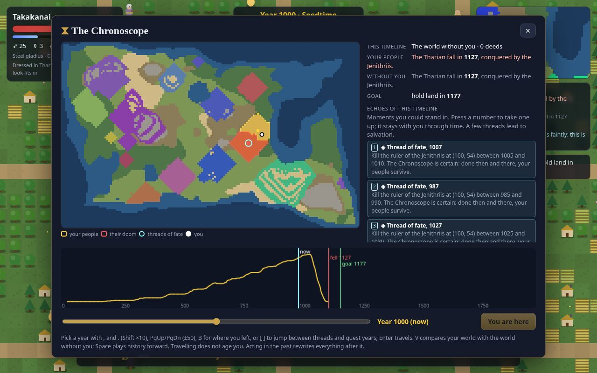
The Chronoscope in world 1: your people outlined in gold, their doom in red; the fate in this timeline and without you; echoes you can take up; and the chart of your people's provinces (gold) against the world without you (dashed).
Key
In the Chronoscope
,. / ←→
Step a year (Shift: 10)
PgUpPgDn
Jump 50 years
[]
Jump between threads of fate and your quests' years
B
Back to the year you left
Home
Now
1–6
Take up an echo
V / Space
Compare histories / play
Enter
Travel to the chosen year
The instrument also hums (top right, under your people's fate) when you are in an era that matters, louder near a moment where a single deed would turn fate, and it sings when you stand exactly there and then.
Echoes of the timeline
The Chronoscope reads turning points out of your timeline and offers them as quests that can only be done in their own years:
◈ Threads of fate: the exact deeds, times and places the Chronoscope has found that would save your people (it replays history to check).
Border wars your people are about to lose, at the border where the first blow falls.
The last stand: the walls of your capital in the years before the fall.
From the chronicle: plagues, sacked capitals, and rival realms in their cradle.
Press the echo's number, then Enter to travel to its years. Echo quests stay with you as you move through time.
World 1"◈ Thread of fate, 1007: kill the ruler of the Jenithriis at (100, 54) between 1005 and 1010. The Chronoscope is certain: done then and there, your people survive."
Watching history change
Press V (anywhere, or in the Chronoscope) to see the world without you beside your world, playing forward from your latest deed. Provinces ruled by someone else than in the other history are marked in white, and a summary says what is different in the year shown.
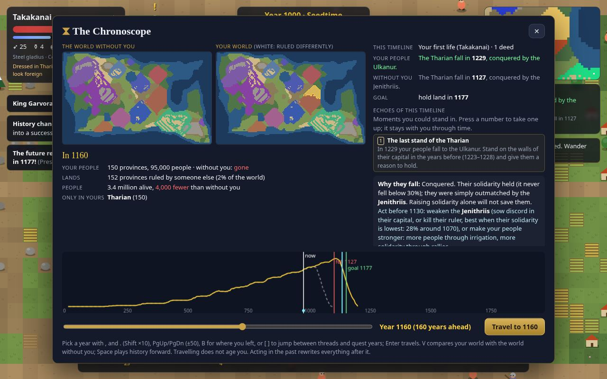
World 1, the year 1160, after killing King Garvoravi in 1000. In your world the Tharian (gold, right) hold 176 provinces; in the world without you they are gone.
Your deeds leave marks
Where a deed of yours still stands in the current timeline, a stone marker records it: who, what and when. It weathers as the years pass. Villagers and elders nearby tell the legend, differently a few years later, a lifetime later, or centuries on ("The old songs tell of Takakanai, who…"). Undo the deed by changing the past and the marker and the stories are gone.
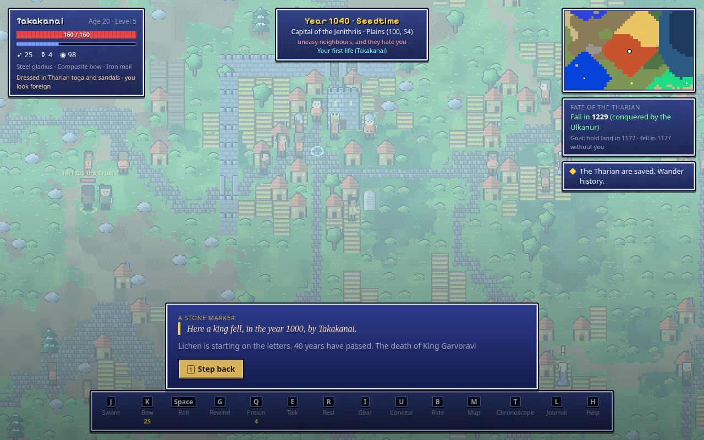
Forty years later, in the Jenithriis capital: "Here a king fell, in the year 1000, by Takakanai. Lichen is starting on the letters."
Rewinding a fight
Once you carry the Chronoscope, hold G. The world slows to a crawl while you choose how far back to slip, from 2 to 10 seconds (the longer you hold, the further); release to go.
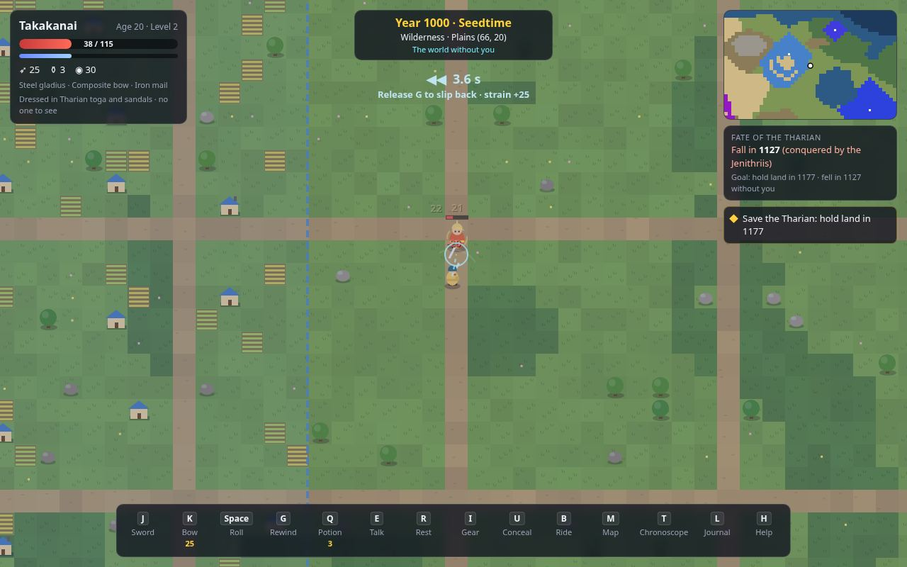
Holding G: how far back, and what it will cost in strain.
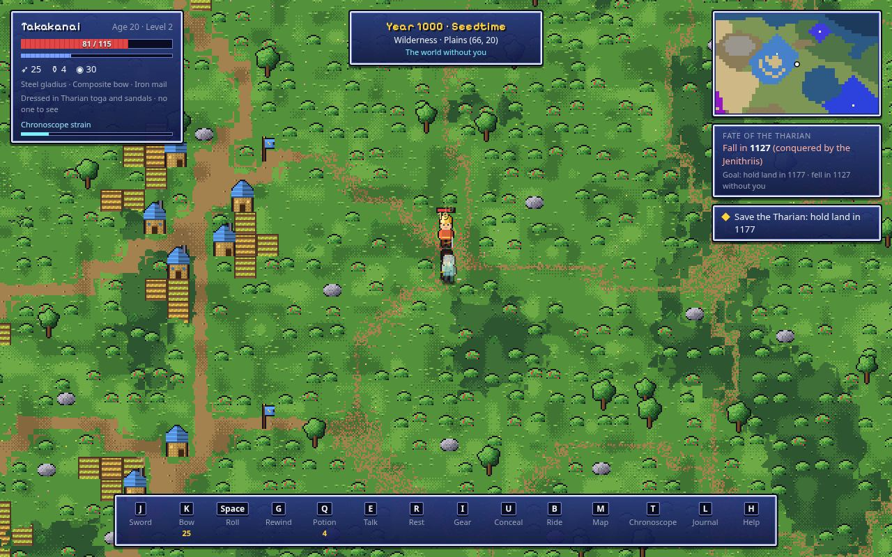
Your past self (translucent) fights beside you, repeating exactly what you did.
Everything still alive goes back: positions, wounds, attacks, arrows in flight, the people you escort. The dead stay dead.
You keep your wounds. Time flows on for you; nothing magic heals you. Your past self has the health you had then, and the enemies who wounded you are still fighting it, so those wounds land on your past self, unless this time things go differently.
Your past self vanishes at the exact moment and place you used the Chronoscope. Rewind again and there can be three of you.
Strain limits it (shown under your health); it cools over time. If enemies kill your past self, the paradox hurts you. Rewinding in front of townsfolk feeds suspicion.
Does it help?Against a king and his guard, an average level-3 player wins 43% of the time without rewinding and 86% with it. At level 1 it still mostly kills you.
Realms at war
Who is at war comes from the simulation's own records for the year you are in: realms that took land from each other in the last 20 years (or are massing to) are at war; others are kin (split from each other or from the same parent), friendly (a common enemy), uneasy neighbours, or at peace. Rewrite history and the wars move.
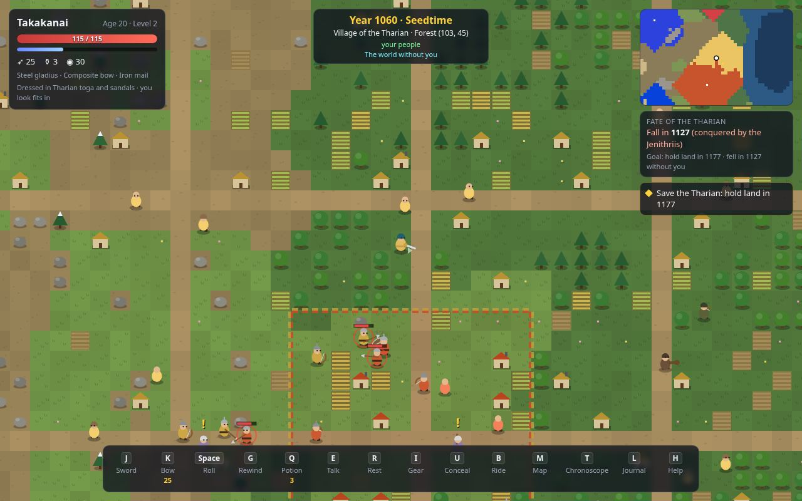
World 1, 1060: the Jenithriis are taking Tharian land. On the border their soldiers (orange) clash with the Tharian (yellow), whether or not you are there. Villagers flee.
A realm's soldiers attack you on sight only if your people are at war with them. Patrols of realms at peace with yours leave you alone.
Standing. Each realm remembers you. Strike a neutral soldier and their comrades turn on you; killing a realm's soldiers sours it; killing invaders on a realm's land warms it. At −30 a realm treats you as an enemy whatever its wars; at +30, as a friend.
Your own people's soldiers fight beside you, and a stroke aimed at your enemies never catches the neutral soldiers beside them.
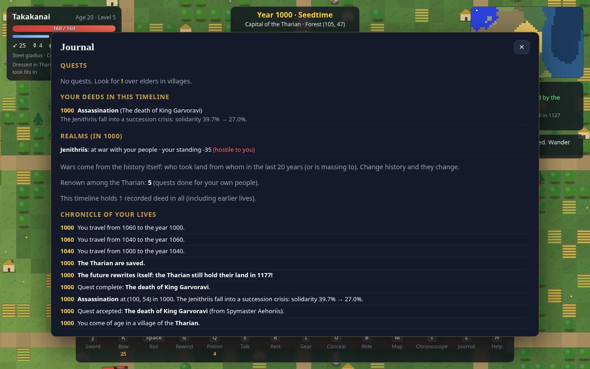
The journal (L): your quests, the deeds of this timeline, the realms that matter with your standing, renown, and the chronicle of your lives.
Gear from other ages
Every weapon, armour, piece of clothing and kind of ammunition belongs to an age of the simulation. Later ages make stronger gear, so you can travel to the future, buy a gun, and bring it back.
Age
Melee
Ranged (ammunition)
Armour
Stone
Stone club
Sling (stones)
Hides
Bronze
Bronze sword
Hunting bow (arrows)
Bronze scale
Iron
Iron sword
Recurve bow (arrows)
Iron mail
Classical
Steel gladius
Composite bow (arrows)
Lorica
Medieval
Longsword
Crossbow (bolts)
Plate armour
Renaissance
Rapier
Arquebus (shot)
Breastplate
Industrial
Cavalry sabre
Rifle (cartridges)
Greatcoat
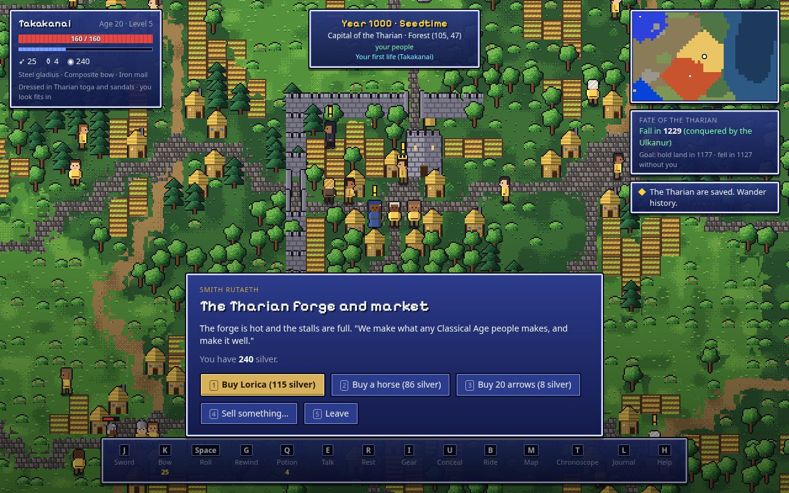
Smiths' markets (capitals and some large towns) sell the gear, clothes, horses and ammunition of their own age, and buy what you bring.
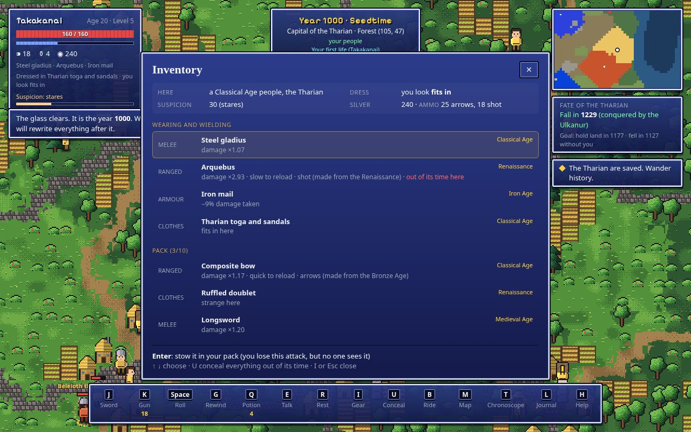
The inventory (I): every slot and your pack, and how each item reads here. ↑↓ choose, Enter wield / wear / stow, X drop.
Ammunition is era-locked. Resting or a smith only restocks what the local age can make: nobody in the Middle Ages makes cartridges.
Selling the future. Sell a far-future item to a smith and their people take it apart: a real knowledge deed for their whole realm.
World 1In 1900 a Renaissance smith of the Kahois sells an arquebus. Back in 1000, among the Classical-age Tharian, suspicion reaches 40 in four seconds; one shot sends it to the top and three witch-hunters come. Sold to the Tharian smith instead, the arquebus raises their whole realm's knowledge from 3,067 to 3,867.
Clothes and suspicion
Suspicion
Wielding gear two or more ages ahead of the people around you, or any gun among people who have never seen one, raises suspicion; a gunshot raises it sharply. At whispers, elders, rulers and smiths will not deal with you and nobody gives you a bed. At witch hunt, witch-hunters come for you. Out in the wilds, no one sees anything.
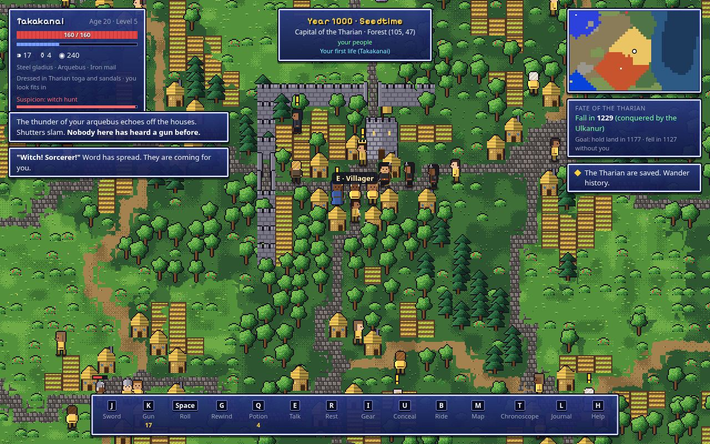
"The thunder of your arquebus echoes off the houses. Shutters slam." Then: "Witch! Sorcerer!"
Press U to conceal everything out of its time in one go, and U again to take it out. While it is hidden you lose that attack or defence: bare fists, nothing to shoot, plain clothes. Single items can be stowed from the inventory.
Clothes
Clothes belong to an age and a people (a "Tharian toga and sandals", a "Kahois ruffled doublet"). No one attacks you over them, but people react:
You look
When
Effect
fits in
Local dress of about the right age
Normal prices and pay
foreign
Another people's dress
Prices +15%, pay −15%
strange
Two ages off
Villagers walk away; some elders refuse you; prices ×1.5; quests pay half
outlandish
Four ages off
Ordinary people will not talk to you; prices ×2
A smith who does not like how you look will still sell you the local clothes, at a markup: "Get yourself decent clothes first, then we'll talk."
The long road
Press M for the travel map. Move the cursor anywhere, or press 1–9 for your capital, quest targets and where you were born, then Enter to set out. The road costs months of your life: a province a month on foot, two on horseback, four months more for a sea passage. You arrive older, in the season you would really have arrived. Escorts travel with you; you cannot leave with enemies on your heels.
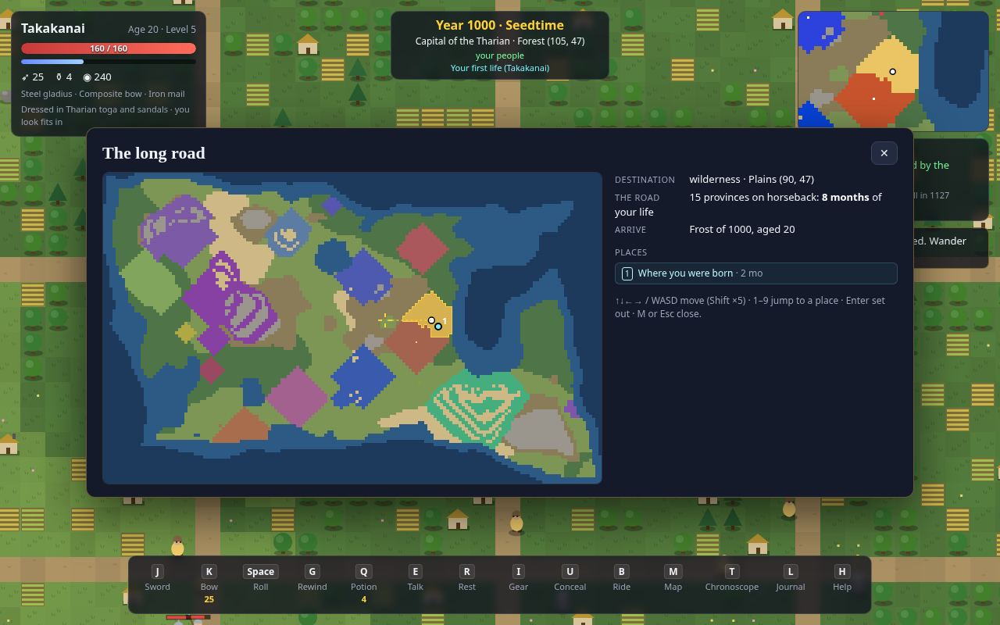
The travel map: the destination, the realm you would be walking into, the road in months, and when and how old you will arrive.
Horses are sold at markets from the Bronze Age on. Press B to mount and dismount: riding is faster, covers twice the ground per month of your life, and fighting puts you back on your feet.
ExampleTwelve provinces away: 12 months on foot, 6 on horseback.
Time, age and death
Walking a province takes about a month; resting takes a season; the long road takes months. You age only by living, never by travelling in time.
Quests travel with you. A quest belongs to its years (from when you take it until 12 years later). Leave and it waits ("Travel back to 1000–1012 to turn it in"); the Chronoscope lists its years, and B in the Chronoscope jumps back to where you left. If your meddling wipes out the village that gave it, it fails.
The Chronoscope passes on. When you die, or grow old, it passes to someone young nearby, born among their own people with their own gear and clothes. Every deed still stands, and the instrument keeps something of your strength: the new bearer starts at your level.
Saving
The game autosaves after every deed, finished quest, journey through time, new year and passing of the Chronoscope, and every 90 seconds. Press P (or Esc) to pause, save to one of three slots, load, or return to the title, where Continue picks up your latest save.
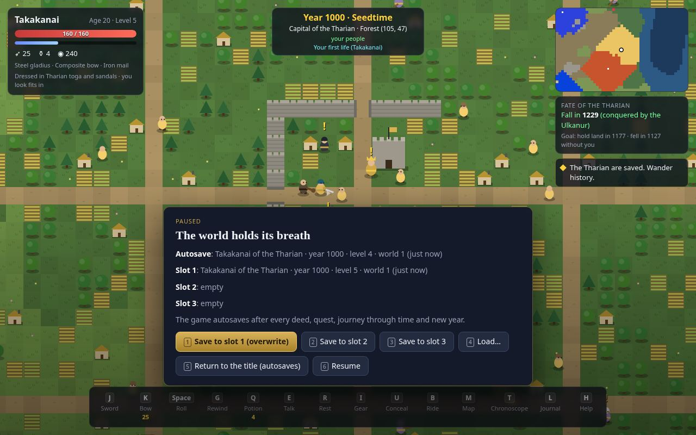
The pause menu. A save is a few kilobytes: it stores your deeds and replays them, so the whole of history comes back exactly.
Saves live in your browser's local storage, so they belong to the browser you play in.
Tips
Read the "why". The Chronoscope tells you whether your people are conquered or collapse from within. Against a conqueror, weaken them (granaries, salt, regicide) or strengthen your people before the war; against collapse, rally and unite them (prophets, sieges held, plagues healed).
Follow the threads. Echoes marked ◈ are deeds the Chronoscope has verified would save your people. They are the shortest road to victory, and usually the most dangerous.
Earn renown early. Camps, frontiers and beasts for your own people level you up and unlock the spymaster's harder work.
Use rewind when a fight turns, not after it is lost: your past self takes the wounds you already took, and you get a second sword.
Dress for the age. Buy local clothes when you arrive somewhere new in time; it is cheap and opens every door.
Bring the future home carefully. A gun is devastating, but ammunition is scarce in the past and people are watching. Conceal it in towns (U), use it in the wilds, or sell it to a smith and change their history.
Watch what you did. After any big deed, press V and see the two histories pull apart.